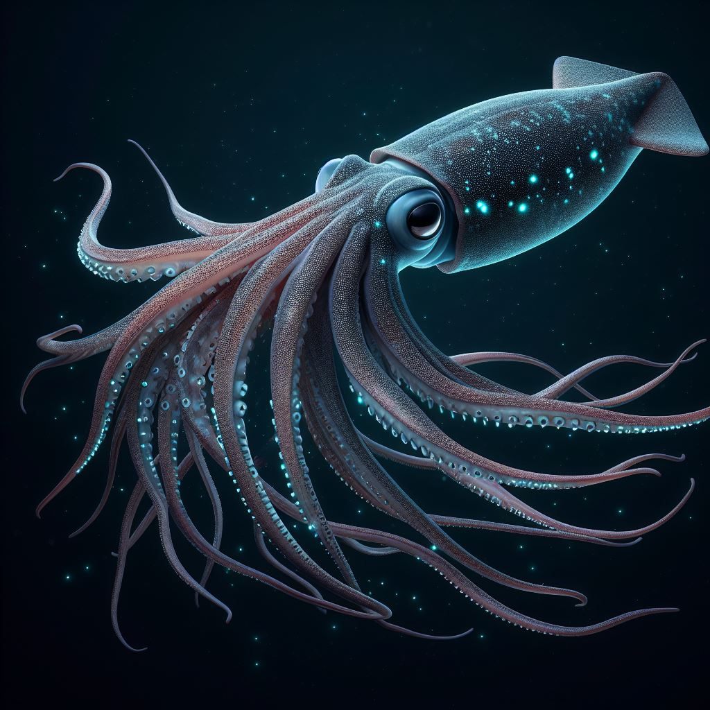
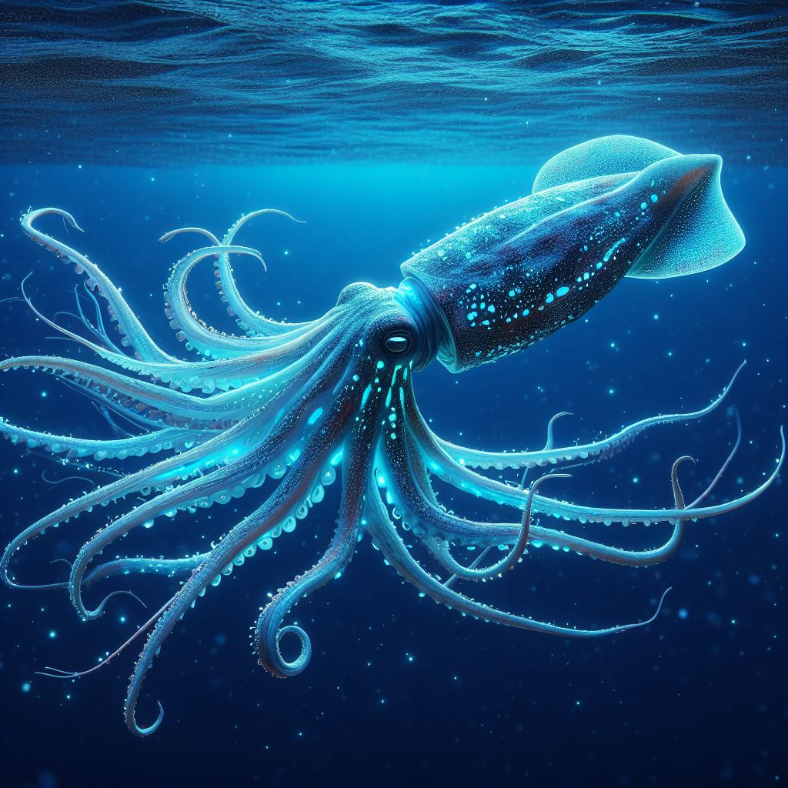

Der faszinierende Tintenfisch
Unser Aquarium ist stolz darauf, den faszinierenden Tintenfisch zu präsentieren. Diese erstaunlichen Meeresbewohner faszinieren Besucher mit ihrer Geschicklichkeit und ihrem einzigartigen Aussehen. Als Bewohner der Tiefen der Ozeane sind Tintenfische ein Symbol für Geheimnis und Anmut.
Ein Blick in die Vergangenheit: Der urzeitliche Tintenfisch
Entdecken Sie den geheimnisvollen urzeitlichen Tintenfisch, ein Wesen aus längst vergangenen Zeiten. Diese faszinierenden Kreaturen sind ein Beweis für die Vielfalt der Evolution und bieten Einblicke in die Vergangenheit unseres Planeten. Ihre Existenz über Millionen von Jahren hinweg öffnet Türen zu den unerforschten Geheimnissen der Geschichte.
Mehr über Tintenfische
Tintenfische sind faszinierende Meerestiere, die zur Klasse der Kopffüßer gehören. Sie sind in den Ozeanen weltweit beheimatet und zeichnen sich durch ihre geschickte Jagdtechnik und ihre bemerkenswerte Intelligenz aus. Tintenfische verwenden ihre Tinte zur Verteidigung und Tarnung und sind Meister der Täuschung. Diese faszinierenden Tiere spielen eine wichtige Rolle im marinen Ökosystem, indem sie sowohl Jäger als auch Beute sind. Trotz ihrer Anpassungsfähigkeit sind Tintenfische durch Umweltverschmutzung, Überfischung und Lebensraumverlust gefährdet.